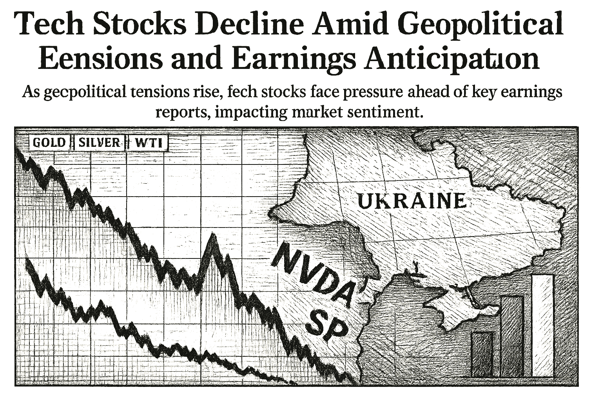

SPY
Current: $773.33Change: -3.89 (-0.50%)
Updated:
Source: yahoo_chartFreshness: fresh


As geopolitical tensions rise, tech stocks face pressure ahead of key earnings reports, impacting market sentiment.

Today's Headline: Tech Stocks Decline Amid Geopolitical Tensions and Earnings Anticipation
Setup: As geopolitical tensions rise, tech stocks face pressure ahead of key earnings reports, impacting market sentiment.
Primary Topic: Tech Stocks
Specific Development: Tech stocks, particularly QQQ and SPY, are experiencing declines as geopolitical tensions escalate, notably with SpaceX throttling Starlink services in Ukraine.
Why Today Is Different: This marks a significant shift in market sentiment as investors react to geopolitical developments while awaiting critical earnings reports from major tech firms.
Secondary Topics: Geopolitical Tensions; Earnings Reports
Tone: cautious
Sectors: Technology; Energy
Companies: NVDA; SPCX
Commodities: Gold; Silver; WTI
Countries Or Regions: Ukraine; Russia
Macro Themes: Earnings Season; Geopolitical Risks
Why This Story: The interplay between geopolitical risks and earnings expectations is crucial for market direction, especially in the tech sector.
Why This Matters: AI Trade Rotation: Software and Cloud Stocks Outpace Chipmakers Ahead of Nvidia Earnings is the clearest current evidence-led frame for Joshua's observation-only review; missing facts remain explicit intelligence gaps.

Summary: Global markets are reacting to rising geopolitical tensions, particularly affecting tech stocks. Major indices are down, with tech ETFs like QQQ and SPY leading the declines.
World Markets Why This Matters: The performance of global markets in response to geopolitical events can influence investor sentiment and trading strategies.

TSLA Earnings Expectations — 2026-10-20, After Close
Consensus EPS: $0.43
Year-ago EPS: unavailable
Expected EPS growth: unavailable
Consensus revenue: $28.1B
Year-ago revenue: unavailable
Expected revenue growth: unavailable
Source: finnhub_earnings_calendar · As of: 2026-10-14T14:15:55.802380+00:00 · Freshness: current

- WOPR learning pipeline: Learning present — untrusted
- Candidates evaluated 24h: 0
- Current gate: Learning trust
- Notification ledger events in 24h: 12
- Pending orders created/canceled/filled/expired: 2/3/0/0
- Pending lifecycle interpretation: Pending-order cancellations have trackable reasons and no obvious rapid churn pattern.
- Portfolio risk: Label: High / Score: 91.8
- Latest intelligence gap report: intelligence_gap_report_2026-10-11.pdf
Why This Matters: The active gate is Learning trust, so the key question is why candidates are stopping before approval, not how to force trades.

- Sentinel role: infrastructure and operational status only.
- State: ONLINE
- Last successful validation: 2026-10-14T14:14:21.428588+00:00
- Payloads accepted/rejected: 26530/0
- Node health score: 100
Why This Matters: Sentinel is ONLINE, so Joshua should use its context only to the extent the latest accepted pulse is fresh and authenticated.

CANDIDATES MOVING THROUGH JOSHUA'S INVESTMENT-REVIEW WORKFLOW
FROZEN DAILY BRIEF SNAPSHOT | 2026-10-14T14:14:24.190440+00:00
QUEUE SUMMARY | Investment Ready: 0 | Waiting for Price: 0 | Waiting for Evidence: 2 | Research Underway: 2 | Governance Hold: 6 | Monitor Only: 0
Investment-ready status: No candidates are currently Investment Ready.
#5 NVDA - Waiting for Evidence [Moved Up 6->5]
Joshua's Thesis: Positive thesis not yet established.
Why Waiting: Positioning gate failed.
Price: 224.51 now; 224.50 preferred entry
What Unlocks It: Clear valuation support; Evidence that the business quality matches the risk being taken; Independent evidence streams pointing the same way
Portfolio Fit: 0.0/100 — VERY LOW ↓
Portfolio Fit Drivers: projected Technology exposure 67.0%; projected AI infrastructure exposure 67.0%; candidate amount $100 vs $49 currently allocated
Candidate Risk: 98.3/100 — VERY HIGH ↑
Risk Drivers: projected Technology exposure 67.0%; projected AI infrastructure exposure 67.0%; candidate amount $100 vs $49 currently allocated
Next: Positioning status must no longer be warning. Owner: Joshua.
#6 AVGO - Governance Hold [Moved Down 5->6]
Joshua's Thesis: Positive thesis not yet established.
Why Waiting: Governance gate has not cleared.
Price: 351.49 now; 357.70 preferred entry
What Unlocks It: Governance gate clears; Clear valuation support; Evidence that the business quality matches the risk being taken
Portfolio Fit: 0.0/100 — VERY LOW ↓
Portfolio Fit Drivers: projected Technology exposure 67.0%; projected AI infrastructure exposure 67.0%; candidate amount $100 vs $49 currently allocated
Candidate Risk: 98.3/100 — VERY HIGH ↑
Risk Drivers: projected Technology exposure 67.0%; projected AI infrastructure exposure 67.0%; candidate amount $100 vs $49 currently allocated
Next: Re-evaluate after the recorded gate clears. Owner: Columbo.
#10 QBTS - Governance Hold [Moved Up 15->10]
Joshua's Thesis: Positive thesis not yet established.
Why Waiting: Governance gate has not cleared.
Price: 12.68 now; 17.52 preferred entry
What Unlocks It: Governance gate clears; Clear valuation support; Evidence that the business quality matches the risk being taken
Portfolio Fit: 0.0/100 — VERY LOW
Portfolio Fit Drivers: projected Unclassified exposure 83.5%; projected Unclassified exposure 83.5%; candidate amount $100 vs $49 currently allocated
Candidate Risk: 100.0/100 — VERY HIGH
Risk Drivers: projected Unclassified exposure 83.5%; projected Unclassified exposure 83.5%; candidate amount $100 vs $49 currently allocated
Next: Re-evaluate after the recorded gate clears. Owner: Joshua.
#15 PLTR - Governance Hold [Moved Down 10->15]
Joshua's Thesis: Positive thesis not yet established.
Why Waiting: Governance gate has not cleared.
Price: 207.21 now; 190.28 preferred entry
What Unlocks It: Governance gate clears; Clear valuation support; Evidence that the business quality matches the risk being taken
Portfolio Fit: 0.0/100 — VERY LOW ↓
Portfolio Fit Drivers: projected Technology exposure 67.0%; projected AI software exposure 67.0%; candidate amount $100 vs $49 currently allocated
Candidate Risk: 98.3/100 — VERY HIGH ↑
Risk Drivers: projected Technology exposure 67.0%; projected AI software exposure 67.0%; candidate amount $100 vs $49 currently allocated
Next: Re-evaluate after the recorded gate clears. Owner: Columbo.
#19 RCL - Governance Hold [Moved Up 21->19]
Joshua's Thesis: Positive thesis not yet established.
Why Waiting: Governance gate has not cleared.
Price: 277.01 now; 275.90 preferred entry
What Unlocks It: Governance gate clears; Clear valuation support; Evidence that the business quality matches the risk being taken
Portfolio Fit: 0.0/100 — VERY LOW
Portfolio Fit Drivers: projected Unclassified exposure 83.5%; projected Unclassified exposure 83.5%; candidate amount $100 vs $49 currently allocated
Candidate Risk: 100.0/100 — VERY HIGH
Risk Drivers: projected Unclassified exposure 83.5%; projected Unclassified exposure 83.5%; candidate amount $100 vs $49 currently allocated
Next: Re-evaluate after the recorded gate clears. Owner: Columbo.
#21 SPCX - Governance Hold [Moved Up 22->21]
Joshua's Thesis: Positive thesis not yet established.
Why Waiting: Governance gate has not cleared.
Price: 153.84 now; 153.39 preferred entry
What Unlocks It: Governance gate clears; Clear valuation support; Evidence that the business quality matches the risk being taken
Portfolio Fit: 0.0/100 — VERY LOW
Portfolio Fit Drivers: projected Unclassified exposure 83.5%; projected Unclassified exposure 83.5%; candidate amount $100 vs $49 currently allocated
Candidate Risk: 100.0/100 — VERY HIGH
Risk Drivers: projected Unclassified exposure 83.5%; projected Unclassified exposure 83.5%; candidate amount $100 vs $49 currently allocated
Next: Re-evaluate after the recorded gate clears. Owner: Advisory Committee.
#22 IONQ - Waiting for Evidence [Moved Up 24->22]
Joshua's Thesis: Positive thesis not yet established.
Why Waiting: Evidence quality is insufficient.
Price: 32.67 now; 40.80 preferred entry
What Unlocks It: Clear valuation support; Evidence that the business quality matches the risk being taken; Independent evidence streams pointing the same way
Portfolio Fit: 0.0/100 — VERY LOW
Portfolio Fit Drivers: projected Unclassified exposure 83.5%; projected Unclassified exposure 83.5%; candidate amount $100 vs $49 currently allocated
Candidate Risk: 100.0/100 — VERY HIGH
Risk Drivers: projected Unclassified exposure 83.5%; projected Unclassified exposure 83.5%; candidate amount $100 vs $49 currently allocated
Next: Data confidence must reach at least 38/100. Owner: Joshua.
#23 UUUU - Governance Hold [Moved Up 25->23]
Joshua's Thesis: Positive thesis not yet established.
Why Waiting: Governance gate has not cleared.
Price: 8.40 now; 14.60 preferred entry
What Unlocks It: Governance gate clears; Clear valuation support; Evidence that the business quality matches the risk being taken
Portfolio Fit: 0.0/100 — VERY LOW
Portfolio Fit Drivers: projected Unclassified exposure 83.5%; projected Unclassified exposure 83.5%; candidate amount $100 vs $49 currently allocated
Candidate Risk: 100.0/100 — VERY HIGH
Risk Drivers: projected Unclassified exposure 83.5%; projected Unclassified exposure 83.5%; candidate amount $100 vs $49 currently allocated
Next: Re-evaluate after the recorded gate clears. Owner: Advisory Committee.
#24 DIA - Research Underway [Moved Down 17->24]
Joshua's Thesis: Positive thesis not yet established.
Why Waiting: Research evidence is still being gathered.
Price: Current price unavailable.; Preferred entry not established.
What Unlocks It: Clear valuation support; Evidence that the business quality matches the risk being taken; Independent evidence streams pointing the same way
Portfolio Fit: 0.0/100 — VERY LOW ↓
Portfolio Fit Drivers: projected ETF exposure 67.0%; projected Broad market exposure 67.0%; candidate amount $100 vs $49 currently allocated
Candidate Risk: 98.3/100 — VERY HIGH ↑
Risk Drivers: projected ETF exposure 67.0%; projected Broad market exposure 67.0%; candidate amount $100 vs $49 currently allocated
Next: Clear valuation support; Evidence that the business quality matches the risk being taken; Independent evidence streams pointing the same way. Owner: Columbo.
#25 XRAY - Research Underway [NEW]
Joshua's Thesis: Positive thesis not yet established.
Why Waiting: Research evidence is still being gathered.
Price: 8.46 now; Preferred entry not established.
What Unlocks It: Clear valuation support; Evidence that the business quality matches the risk being taken; Independent evidence streams pointing the same way
Portfolio Fit: 0.0/100 — VERY LOW
Portfolio Fit Drivers: projected Unclassified exposure 83.5%; projected Unclassified exposure 83.5%; candidate amount $100 vs $49 currently allocated
Candidate Risk: 100.0/100 — VERY HIGH
Risk Drivers: projected Unclassified exposure 83.5%; projected Unclassified exposure 83.5%; candidate amount $100 vs $49 currently allocated
Next: Clear valuation support; Evidence that the business quality matches the risk being taken; Independent evidence streams pointing the same way. Owner: Columbo.
Observation only. This section creates no recommendation, order, authority, or execution instruction.

- If NVDA reaches the recorded price condition <= 224.5, which recorded evidence and governance requirements would still remain?
- Which recorded governance requirement must clear before AVGO can advance?
- Which recorded governance requirement must clear before QBTS can advance?
- Which recorded governance requirement must clear before PLTR can advance?
- What TSLA EPS or revenue result would materially change the current recorded thesis?

The decline in tech stocks amid rising geopolitical tensions highlights the fragility of market sentiment. Investors are increasingly cautious as they await key earnings reports, which could further influence market dynamics. The interplay between geopolitical risks and earnings expectations is critical for understanding potential market movements.

Compared to: 2026-10-13
- Market weather: Cautious -> Balanced
- Top opportunity: Still DELL
- Joshua gate: Still Learning trust
- 2Y Treasury.last_price: 4.79 -> 4.79 (unchanged); 2Y Treasury.last_price changed 0.00% versus the prior frozen Chronicle snapshot.
- 2Y Treasury.percent_change: -0.2083333333333289 -> -0.2083333333333289 (unchanged); 2Y Treasury.percent_change changed 0.00% versus the prior frozen Chronicle snapshot.
- 10Y Treasury.last_price: 5.21 -> 5.21 (unchanged); 10Y Treasury.last_price changed 0.00% versus the prior frozen Chronicle snapshot.
- 10Y Treasury.percent_change: -0.5725190839694704 -> -0.5725190839694704 (unchanged); 10Y Treasury.percent_change changed 0.00% versus the prior frozen Chronicle snapshot.
- 30Y Treasury.last_price: 5.56 -> 5.56 (unchanged); 30Y Treasury.last_price changed 0.00% versus the prior frozen Chronicle snapshot.
- 30Y Treasury.percent_change: -0.714285714285715 -> -0.714285714285715 (unchanged); 30Y Treasury.percent_change changed 0.00% versus the prior frozen Chronicle snapshot.
- SPY.last_price: 773.09 -> 773.328 (up); SPY.last_price changed 0.03% versus the prior frozen Chronicle snapshot.
- SPY.percent_change: -0.5313810761431763 -> -0.5007591158230684 (up); SPY.percent_change changed 5.76% versus the prior frozen Chronicle snapshot.
- QQQ.last_price: 736.443 -> 737.03 (up); QQQ.last_price changed 0.08% versus the prior frozen Chronicle snapshot.
- QQQ.percent_change: -2.8093120240719034 -> -2.731843796603018 (up); QQQ.percent_change changed 2.76% versus the prior frozen Chronicle snapshot.
- IWM.last_price: 272.805 -> 273.08 (up); IWM.last_price changed 0.10% versus the prior frozen Chronicle snapshot.
- IWM.percent_change: -1.762693554195168 -> -1.6636658264314024 (up); IWM.percent_change changed 5.62% versus the prior frozen Chronicle snapshot.

The shift in market sentiment due to geopolitical developments has prompted a reassessment of risk in the tech sector.
No specific warnings from yesterday's brief were applicable today; however, the geopolitical landscape remains a critical factor.
Portfolio Construction Review
Current allocation: 49.21 allocated.
Largest sector: Industrials at 50.1%.
Largest theme: Economic cycle at 50.1%.
Diversification: Mixed (49.9).
Cash allocation: 95.1% unallocated.
Recommended exposure: DELL at portfolio-fit score 0.0.
Portfolio fit: DELL has strong standalone evidence, but it increases portfolio concentration.
Why This Matters: Portfolio Manager evaluates whether an opportunity improves this portfolio; it does not select the investment, vote, or authorize execution.

Focus on the implications of geopolitical developments on tech earnings and market sentiment.

| Can trigger trade | no |
| Can modify trade rules | no |
| Can add watch items | yes |
| Can add review questions | yes |
| Can adjust confidence notes | yes |
| Input policy | external_intelligence_plus_sanitized_internal_observations |
| External policy | The Editor-in-Chief synthesizes current world/market context where available and labels unknowns; provider/model provenance remains separate. |
| Internal policy | Joshua/WOPR/Sentinel facts are supplied as sanitized observation-only summaries. |
| Editorial model | gpt-4o-mini |
- Selected by a deterministic daily rotation through symbols already present in the persisted Chronicle snapshot.
- Next earnings: October 20, 2026 (after close); status: scheduled.
- Source: finnhub_earnings_calendar.
- ASML Raises Sales Forecast For A Third Time, But Q3 Revenue Miss Sends Stock Lower: Earnings Selloff Spreads To MU, SNDK, INTC
- Desk: earnings; source: Yahoo; linked symbols: MU.
- Published: 10/13/26 23:11 MST.
- High-impact watch: FOMC Meeting Two-day meeting, October 27 - 28 Press Conference - 10/28/26 11:00 MST.
- Affected assets: US equities, Treasuries, USD; source: federal_reserve_calendar.
- TSLA earnings: October 20, 2026, after close.
- LTC earnings: October 22, 2026, time unknown.
- RCL earnings: October 27, 2026, before open.
- Energy: 6.22% session performance; source: persisted sector ledger.
- Consumer Staples: 3.56% session performance; source: persisted sector ledger.
- Health Care: 2.22% session performance; source: persisted sector ledger.
- NASDAQ FUTURES: -2.01% recorded move; price: 30483.75.
- Session: open; catalyst status: possible; source: yahoo_chart.
- Geopolitical Developments; why it matters: Ongoing tensions could further impact energy prices and market sentiment.
- State: healthy; score: 58.80/100; advance/decline ratio: 1.33.
- Above 50-day average: 38.70%; sample: 119; provider: sentinel_sampled_breadth.
- Decision outcomes evaluated: 16; currently untestable: 0.
- Warning review: unknown 3; confidence calibration: insufficient_sample.
- Current macro regime: defensive_rotation; change probability: unavailable.
- Risk dashboard: cautious (55/100); breadth: healthy; sentiment: neutral.
- Scenario board only - a current-state observation, not a forecast or execution instruction.
- Produced a celebrated record managing Fidelity Magellan and taught generations of individuals how to research understandable growth companies.
- Published quotation: "The person that turns over the most rocks wins the game."
- Published framework: Start with companies you can understand, then verify the story through earnings, balance-sheet strength, valuation, competitive position, and a clearly stated reason the opportunity may be mispriced.
- Committee lens: Lynch asks Joshua for a plain-language company story and the fundamental evidence behind it, connecting real-world observation to valuation rather than to hype.
- Public philosophy profile only; no participation, endorsement, or current recommendation is implied.
- Which recorded governance requirement must clear before PLTR can advance?
- DELL: No canonical symbol-specific material event is linked.
- Attach the missing DELL evidence before the next committee review.
- Define evidence that would confirm or retire each unresolved warning before the next review window.
- If NVDA reaches the recorded price condition <= 224.5, which recorded evidence and governance requirements would still remain?
- Which recorded governance requirement must clear before AVGO can advance?
- Which recorded governance requirement must clear before QBTS can advance?
- Which recorded governance requirement must clear before PLTR can advance?
- Evidence agenda: DELL - No canonical symbol-specific material event is linked.
- Proposed review: Earnings Reports; why it matters: These reports will provide insight into how companies are navigating the current economic landscape.
- Proposed review: IMF Updates; why it matters: Further updates from the IMF could shift market expectations.
- Canonical instruments reviewed: 24; delayed 6, fresh 18.
- Leading sources: yahoo_chart (21), treasury_official_yield_curve (3).
- Snapshot recorded: 10/14/26 07:15 MST.
Tech Stocks Decline Amid Geopolitical Tensions and Earnings Anticipation
Storm meter: Cautious
#5 NVDA - Waiting for Evidence [Moved Up 6->5]
Observation mode: observation_only
Watch: Earnings Reports; why it matters: These reports will provide insight into how companies are navigating the current economic landscape.
Question: If NVDA reaches the recorded price condition <= 224.5, which recorded evidence and governance requirements would still remain?